牙醫學會
牙醫學會 診所位置
診所位置 回到首頁
回到首頁 歐嘉得 醫師
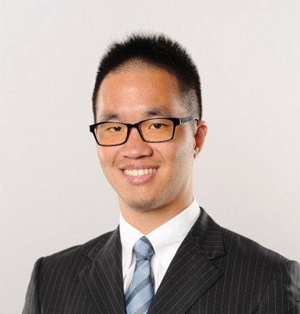
歐恩智 醫師
謝欣玫 醫師
歐嘉得 醫師
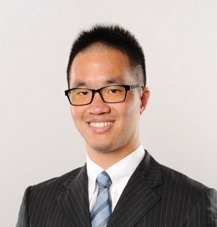
歐恩智 醫師
謝欣玫 醫師
 張家豪 醫師
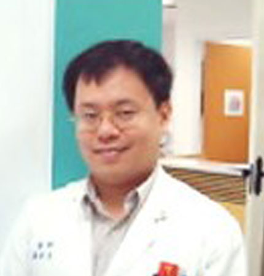
羅金文 醫師
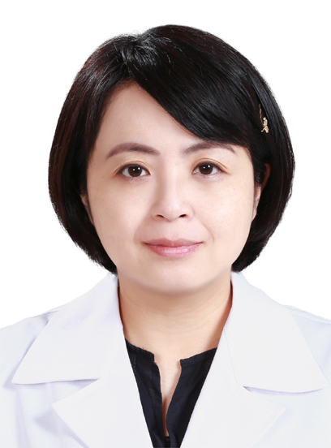
呂佳純 醫師
張家豪 醫師
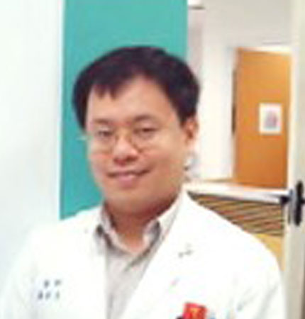
羅金文 醫師
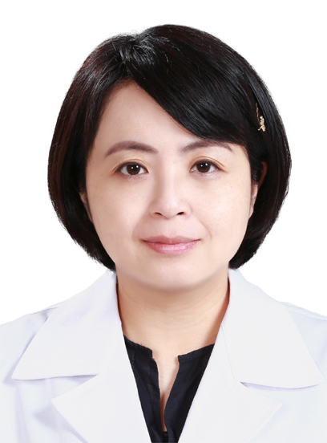
呂佳純 醫師
 黃恬憶 醫師
黃恬憶 醫師
 鹿島茂 技師
曾俊皓 醫師
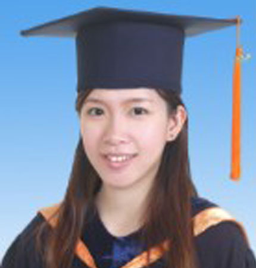
陳詠恩 醫師
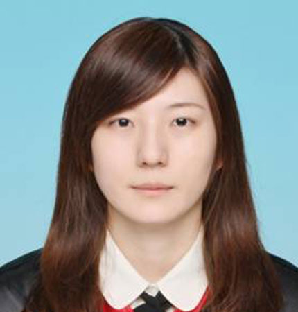
熊柔安 醫師
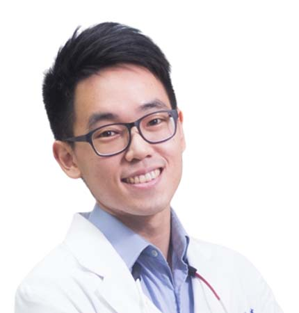
徐子航 醫師
鹿島茂 技師
曾俊皓 醫師
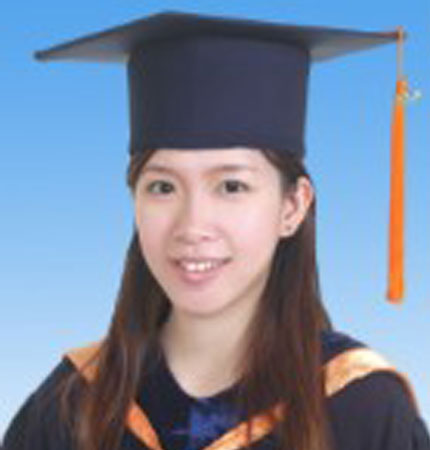
陳詠恩 醫師
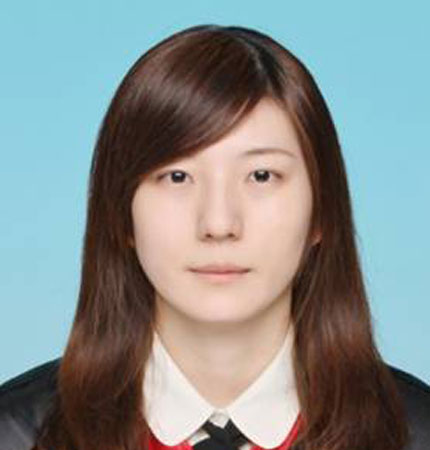
熊柔安 醫師
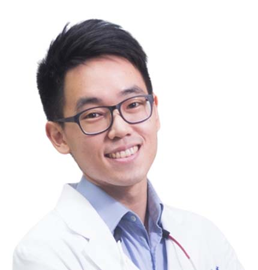
徐子航 醫師
 李麟徵 醫師
陳益貞 醫師
李麟徵 醫師
陳益貞 醫師
【專長】:
口腔顎面外科、植牙重建、 正顎手術
簡歷:
台北醫學大學牙醫系畢業
德國國家口腔外科專科醫師
德國柏林自由大學口腔顎面外科專科醫師(1984-1986)
馬偕紀念醫院總院牙科住院醫師
馬偕紀念醫院總院牙科總醫師
馬偕紀念醫院總院牙科主治醫師
馬偕紀念醫院總院牙科資深主治醫師
馬偕紀念醫院總院牙科主任(1993-1999)
台北醫學大學口腔顎面外科兼任部訂講師
臨床助理教授及附設醫院兼任主治醫師
中華民國口腔顎面外科專科醫師
中華民國口腔顎面外科學學會常務理事
中華牙醫學會理事、常務監事
台北市牙醫師公會理事
現任:
歐嘉得牙醫診所院長
台北醫學大學口腔顎面外科兼任部訂講師
臨床助理教授及附設醫院兼任主治醫師
【專長 】:
口腔顎面外科、植牙重建、智齒及阻生齒拔除手術、牙周病治療
簡歷:
台北醫學大學牙醫學院畢業(2009畢)
前署立迴龍醫院牙科部主治醫師
台北醫學大學植牙碩班結業
現任
歐嘉得牙醫診所主治醫師
【專長 】:
一般牙科、固定假牙、全口假牙、活動假牙
簡歷:
中華民國贗復學會專科醫師
陽明大學贗復牙醫學碩士
台北榮民總醫院醫師
中山醫學大學牙醫學院畢業
彰化秀傳醫院醫師
現任:
歐嘉得牙醫診所主治醫師
【專長 】:
兒童牙科專科
簡歷:
高雄醫學大學牙醫系畢業
日本東京醫科齒科大學小兒齒科學教室專攻生卒業
高雄醫學大學口腔衛生研究所畢業
台北市馬偕紀念醫院牙科住院醫師
台北市馬偕紀念醫院牙科總醫師
台北市馬偕紀念醫院牙科主任
台北市馬偕紀念醫院牙科資深主治醫師
美國加州大學舊金山醫學中心UCSF成長發育科助理教授
美國加州大學舊金山醫學中心UCSF兒童牙科客座助理教授
台北醫學大學兒童牙科臨床助理教授
現任:
歐嘉得牙醫診所主治醫師
【專長 】:
口腔顎面外科、智齒及阻生齒拔除手術
簡歷:
陽明大學口腔顎面外科學碩士
台北榮民總醫院口腔顎面外科醫師
台北醫學大學牙醫學院畢業
台北國泰綜合醫院醫師
現任:
歐嘉得牙醫診所主治醫師
【專長 】:
簡歷:
埼玉歯科技工士專門學校畢業
國立東京醫歯大學歯學部附屬歯科技工士學校實習科畢業
日本上藤沢歯科
馬偕紀念醫院牙科技工室專任技師
台灣DEGUSSA台灣地區技工商品顧問
台灣GC而至台灣地區技工商品公認技師、顧問
台灣新北市牙體技術工會講師
台北市牙體技術師職業公會現任監事
鹿島茂歯科技術工作室(KD Dental Lab)現任負責人
【專長 】:
簡歷:
私立台北醫學大學牙醫學系學士
國立陽明大學牙醫科學研究所碩士
前部立雙和醫院口腔顎面外科主任
臺灣頭頸部腫瘤醫學會專科醫師、理事
中華民國植牙醫學會植牙專科醫師、理事
臺灣顏面整形重建醫學會專科醫師
部立雙和醫院口腔顎面外科主治醫師
【專長 】:
牙周病治療與牙周再生手術
植牙重建
牙齦萎縮與相關牙周整形手術
嚴重齒槽骨破壞之重建
簡歷:
臺灣牙周病醫學會專科醫師
臺北榮民總醫院牙周病科總醫師
臺北榮民總醫院牙周病科資深住院醫師
臺北榮民總醫院牙周病專科訓練
國立陽明大學牙周病學助教
國防醫學院臨床指導醫師
臺灣牙周病醫學會 青年發展委員會副秘書長
美國牙周病醫學會會員
台灣植牙醫學會會員
臺北榮民總醫院不分科住院醫師
高雄醫學大學牙醫學系
【專長 】:
咬合不正、暴牙、牙齒亂、戽斗、嘴凸、虎牙、關閉缺牙空間、笑齦
簡歷:
台大醫院 齒顎矯正科醫師
台大臨床牙醫研究所 齒顎矯正碩士
台北榮民總醫院 住院醫師
國立陽明大學牙醫學士
隱適美Invisalign數位隱形矯正認證醫師
商業周刊良醫健康網專欄牙醫師
現任：歐嘉得牙醫診所主治醫師
【專長 】:
全口及局部活動假牙
固定假牙
全口重建 前牙美學
植牙重建 一般牙科
全瓷嵌體及全瓷冠
簡歷:
國立陽明大學贗復牙科碩士
中華民國贗復牙科學會會員
台灣植牙醫學會會員
臺北榮民總醫院贗復專科訓練醫師
臺北市立萬芳醫院不分科住院醫師
台北醫學大學牙醫學系
【專長 】:
全口及局部活動假牙 固定假牙
全口重建 前牙美學 植牙重建
一般牙科 全瓷嵌體及全瓷冠
簡歷:
中華民國贋復牙科專科醫師
國立陽明大學贋復牙科碩士
高雄醫學大學牙醫學系學士
中華民國贋復牙科會員
台北榮民總醫院贋復牙科專科訓練
現任
歐嘉得牙醫診所主治醫師
【專長 】:
簡歷:
台北醫學大學牙醫系畢業
國立陽明大學臨床醫學研究所碩士
衛福部部定口腔顎面外科專科醫師
台北馬偕醫院口腔顎面外科專任主治醫師
台北新光醫院兼任主治醫師
現任
歐嘉得牙醫診所主治醫師